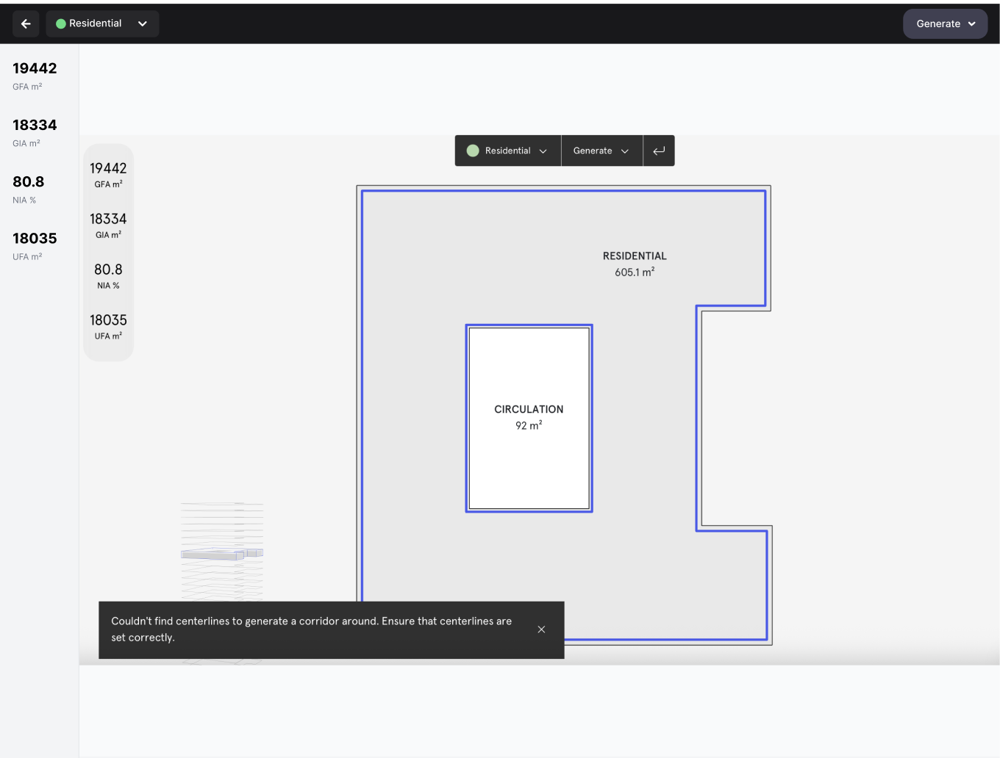
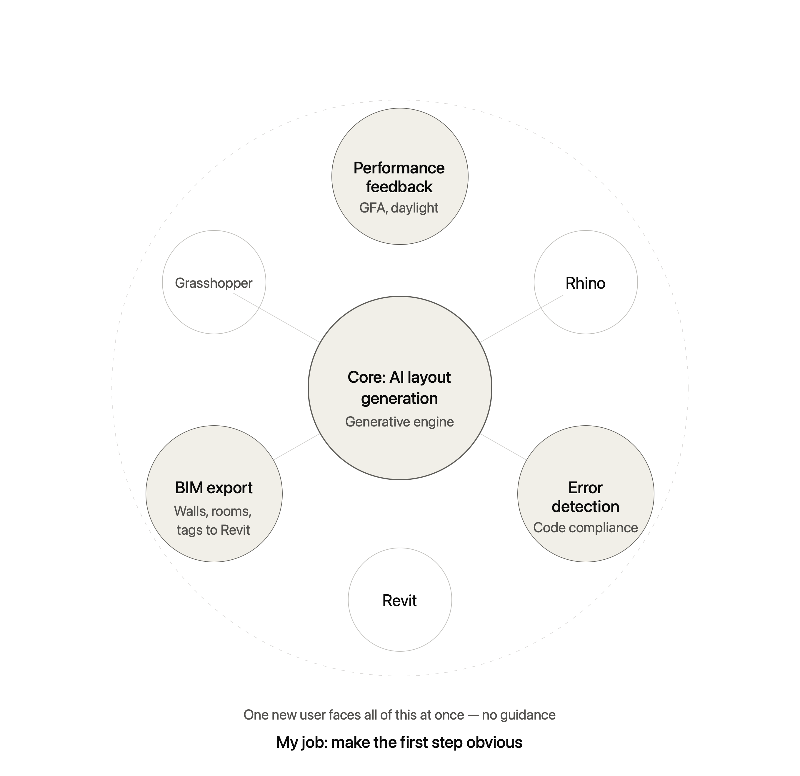
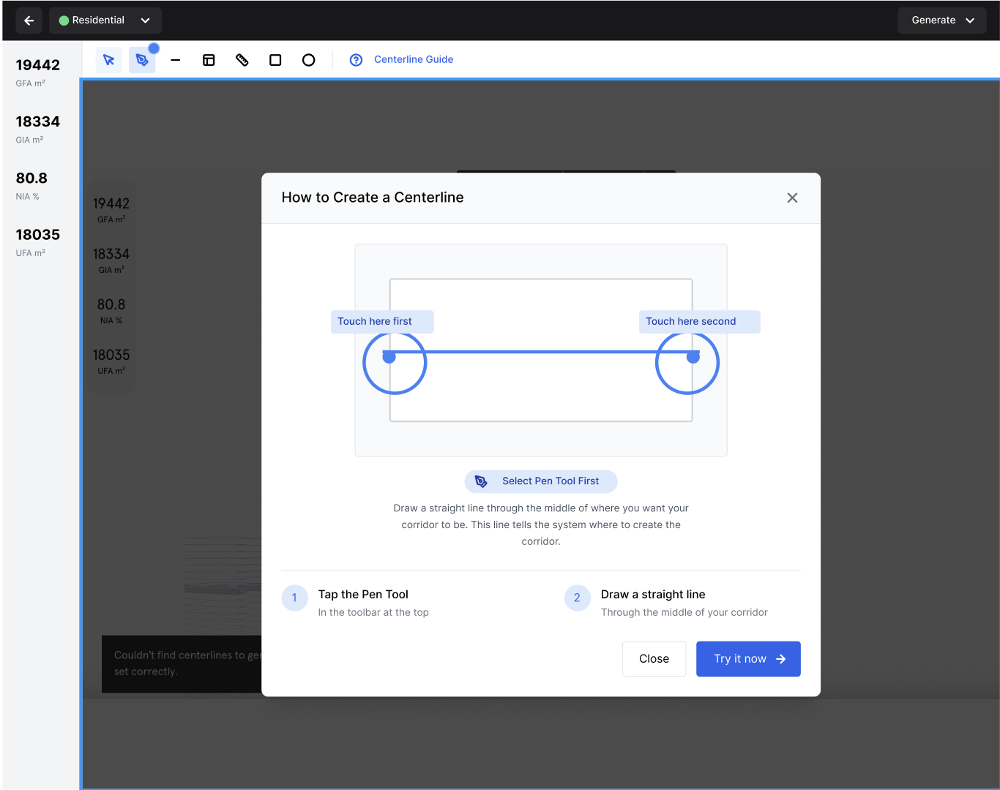
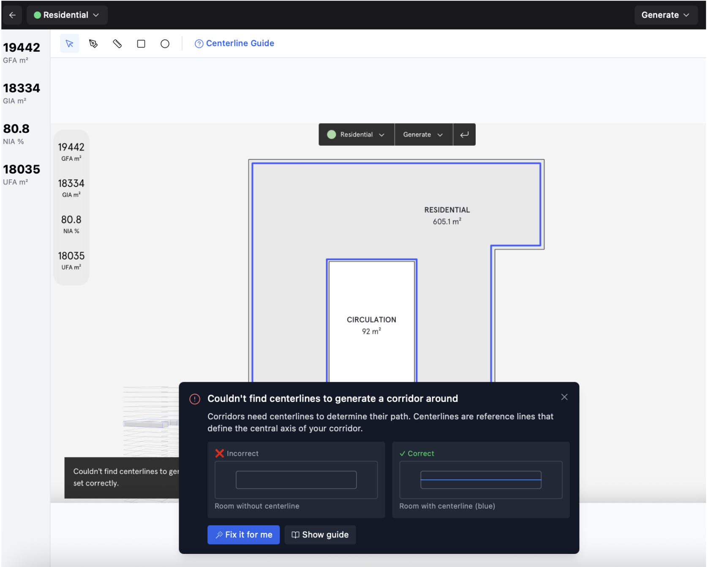
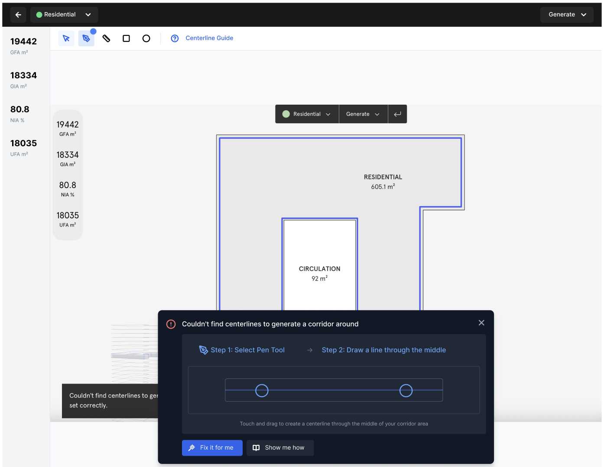
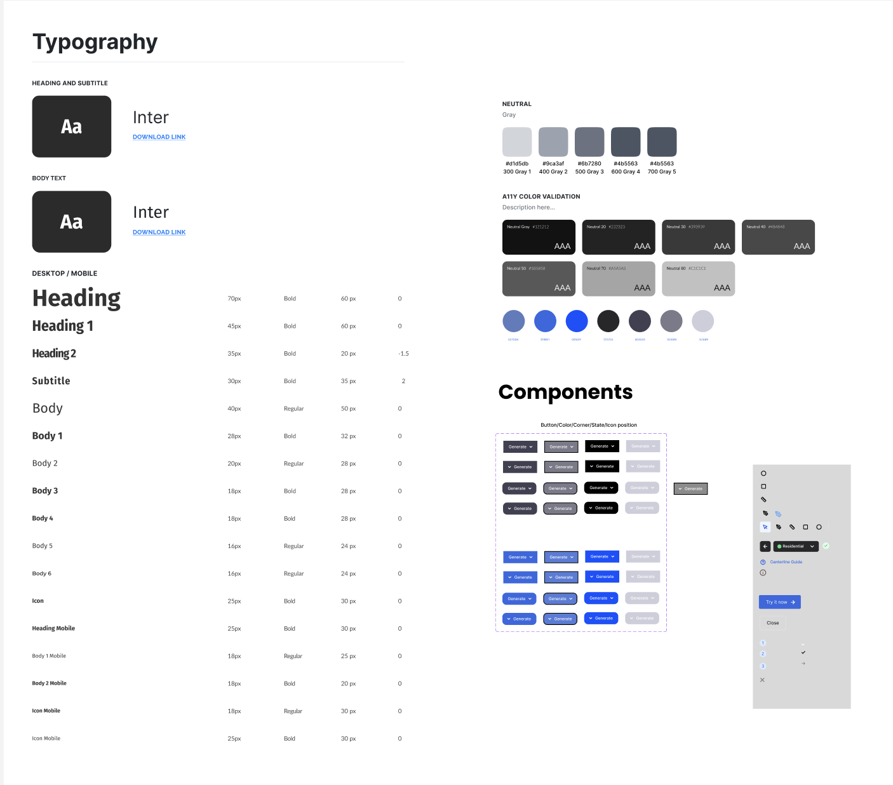

From 3 to 10 of 12 users finishing the centerline step unaided
Before architects could explore massing options, they first had to complete a complex centerline workflow that many found difficult to understand. I found the pain point through research and designed a guided interface to fix it.
New users hit a hard stop on day one — the tool asked for a “centerline” with no explanation, and there was no way to continue.
I diagnosed the failure through the tool itself, competitor research, and architectural domain knowledge then validated the redesign in a 12-person usability test.
A guided 4-step flow that explains, shows, and validates the centerline input in real time — validated in a 12-person usability test.

A hard stop on day one
This wasn’t a bug. It wasn’t a missing feature. It was an onboarding failure — a domain-specific term presented to general users with no explanation, no guidance, and no way forward.
The tool’s only response to the failure was a bare toast: “Couldn’t find centerlines… Ensure that centerlines are set correctly.” No definition. No example. No next step. Users who couldn’t define one hit a complete wall — not friction, not confusion, but a hard stop. The onboarding failure was the product failure.
Usability test
I validated the redesign in a moderated usability test with 12 participants, each of whom used both the original and the redesigned flow. The task was “Generate a corridor for this floor plan.” Success meant creating a valid centerline and generating the corridor without help, within 3 minutes. I also diagnosed the problem through the tool itself, competitive analysis of how AEC tools like Rhino, SketchUp, and Revit handle domain-specific onboarding, and architectural domain knowledge.
Why users got stuck
Domain jargon as a blocker
“Center line” is an architectural term with a specific technical meaning. For non-specialists — or architects new to computational tools — it was meaningless, and the tool gave no definition.
No progressive guidance
The tool presented a blank canvas and a requirement. No step-by-step onboarding, no example, no visual cue showing what “selecting and connecting points” looked like.
Confirmed in testing
With the original flow, only 3 of 12 participants completed the centerline step unassisted, and 7 of 12 asked for help.
Translating 3D thinking into a flat UI
Helping users grasp spatial, structural concepts through a flat interface meant turning 3D architectural thinking into clear, sequential steps anyone could follow.
“I don’t even know what a centerline is here.”
“Is it broken? Nothing is happening.”
The Finch 3D ecosystem
Understanding why the failure happened meant first understanding what Finch 3D actually is — not just a design tool, but an AI-powered constraint engine embedded in an architectural workflow, connected to external inputs that users bring from other software.

A constraint engine, not an image generator
As I read the product, Finch 3D’s AI core works as a graph-based constraint engine. A building layout is represented as a graph — rooms as nodes, with edges encoding adjacency requirements, structural dependencies, and circulation constraints. When an architect inputs a floor plan, the engine traverses the space of valid configurations and returns optimised layout variations that satisfy all constraints simultaneously.
This distinction matters for onboarding design. Users encountering the “centerline” prompt aren’t being asked to draw something — they’re being asked to define a structural axis that the constraint engine uses to anchor its spatial graph. The tool is asking for a precise geometric input that unlocks the entire computation. Without it, there is nothing to compute.
Why the centerline is the critical input
In architectural drawing, a centerline marks the structural axis of a wall — the reference from which dimensions, loads, and spatial relationships are measured. In Finch 3D’s constraint model, it’s the seed: the anchor from which the graph of spatial relationships is built outward. Asking a user to supply it with no context is equivalent to asking someone to provide a database primary key without telling them what a database is.
From discovery to solution
Diagnose the tool
Opened and used Finch 3D as a first-time user, documenting every moment of confusion. The undocumented centerline requirement emerged immediately as the critical failure point.
Secondary research
Studied architectural software documentation, forum discussions, and reviews to reconstruct the typical user’s mental model when encountering “centerline.”
Competitive analysis
Looked at how Rhino, SketchUp and Revit handle first-time input. The pattern I carried into the redesign: show an example before asking for input.
Wireframing the solution
Designed a step-by-step guided flow: define what a centerline is, show a visual example, prompt the user to click the first point, then connect points — with live validation at each step.
Usability test
Tested the original and the redesigned flow with 12 participants, who used both versions. Measured unassisted success, time to first valid centerline, and requests for help.
The guided flow I designed
Finch 3D provided no onboarding for the centerline requirement — the blank error state was all users saw. The redesign explains the term, shows the destination, and validates each step in real time.
A single dismissive toast: “Couldn’t find centerlines… Ensure that centerlines are set correctly.” No explanation, no example, no way forward.

A guided panel that defines the term, contrasts incorrect vs correct, and offers a clear next action — “Fix it for me” or “Show guide.”
Inside the guided experience



Three principles that guided every decision
Explain domain terms before demanding them. Define domain-specific language the moment it’s first encountered — in context, before the user needs to act on it.
Show the destination before asking for the journey. Users can’t give meaningful input until they see what the output looks like. Showing a completed centerline first addressed the most common point of failure.
Validate in real time, not at submission. Each step gave immediate visual feedback — the centerline appeared as points connected. Errors were visible and correctable without losing progress.
Built to scale, not just to ship
The guided flow was built on a reusable foundation — defined typography, a neutral colour system, and component variants in Figma — so the solution could extend consistently across the product.

See the prototype in action
From blocked to guided in four steps
I designed a guided onboarding flow built on three principles: explain domain terms before demanding them, show the destination before asking for the journey, and validate in real time rather than at submission.
The solution replaced the bare error toast with a panel that defines the term, contrasts an incorrect centerline with a correct one visually, and offers two recovery paths — “Fix it for me” or “Show guide.” The guide walks users through four steps with live canvas feedback at each stage: explain → show → place → connect.
Limits: prototype test, n=12. Every participant used both versions, so learning effects may favour the redesign. Directional evidence, not production data.
“The centerline problem was never a technical problem — it was a communication problem. Once I named it as that, the solution was obvious.”— Medya Asgharyan, UX Researcher & Designer